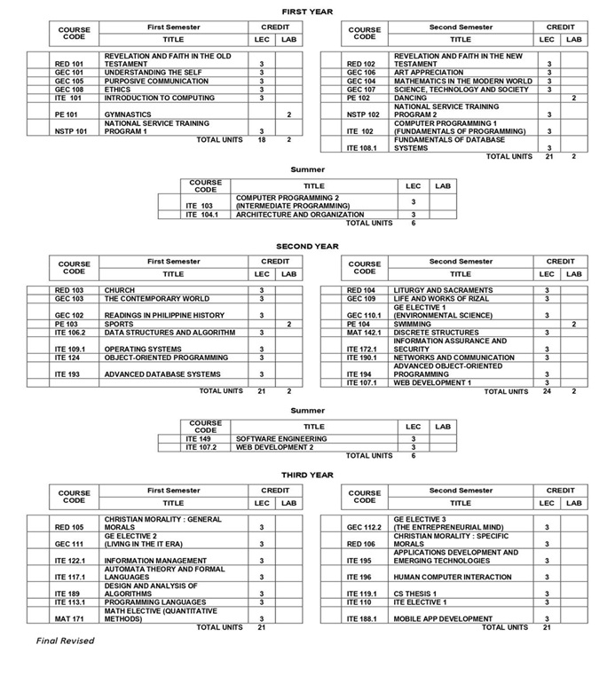
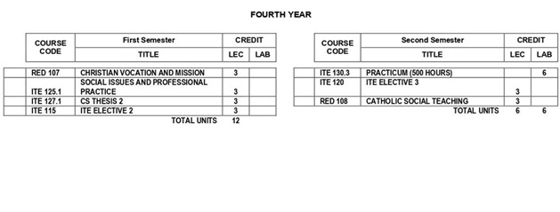

BSCS Computer Science
The BS Computer Science program includes the study of computing concepts and theories, algorithmic
foundations, and new developments in computing. The program prepares students to design and create
algorithmically complex software and develop new and effective algorithmic for solving computing
problems.
The program also includes the study of the standards and practices in Software Engineering. It prepares
students to acquire skills and disciplines required for designing, writing, and modifying software
components, models, and applications that comprise software solutions.

